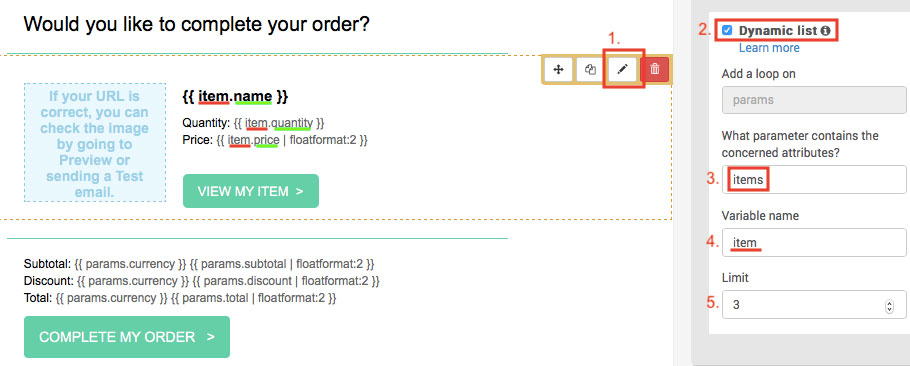
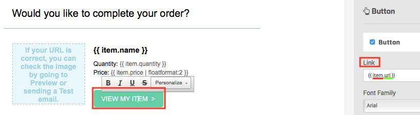
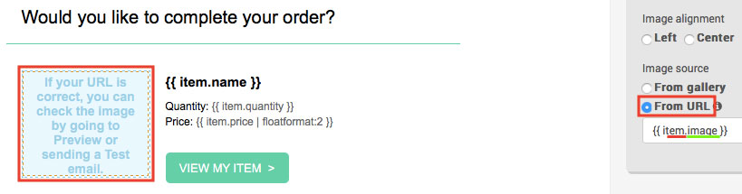
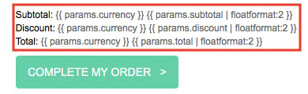
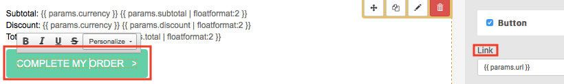
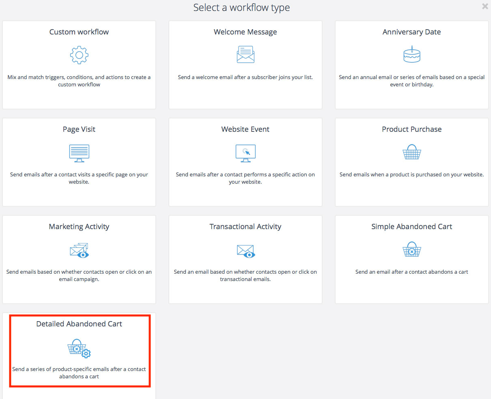
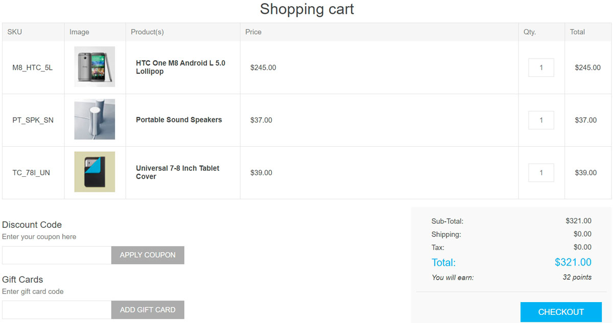
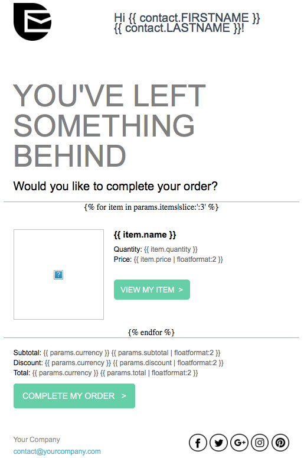
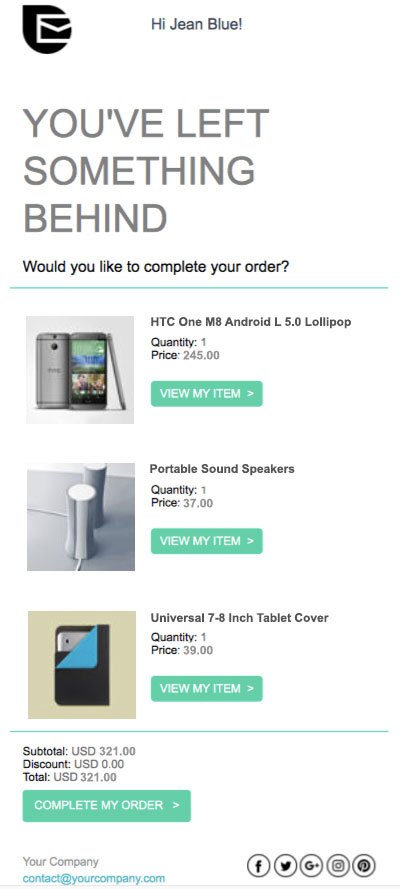

復原廢棄購物車
在本教學中，您將學習如何建立廢棄購物車電子郵件，以及如何設定工作流程來找回流失的銷售。您也將了解哪些 nopCommerce 訂單資料與 Brevo 平台相容。
開始之前
您需要準備以下項目：
- Brevo 帳號憑證。如果您尚未擁有，請免費註冊。
- 請確保您的帳號已啟用 Brevo 的 New Template Language 電子郵件範本語言。
- 請依照這些步驟來設定 Brevo 外掛。
建立購物車未結帳提醒郵件範本
首先，登入您的 Brevo 帳號，接著前往 Automation 平台 > Email Templates。點選右上角的 New Template 按鈕。
此郵件範本可以使用多種資料類型進行個人化設定：
使用聯絡人屬性個人化您的電子郵件
讓我們從 使用聯絡人屬性進行個人化 開始。
在下方的範例中，我們包含了以下個人化內容：
- 使用 {{ contact.FIRSTNAME }} 顯示收件人的名字
- 使用 {{ contact.LASTNAME }} 顯示收件人的姓氏
Note
FIRSTNAME 和 LASTNAME 必須是您 Brevo 帳戶中已存在的屬性。

現在，讓我們使用訂單變數（例如遺留商品的名稱、圖片、價格等）來個人化電子郵件範本。為此，我們將使用 New Template Language 來插入動態清單。
使用棄置商品詳細資訊個人化您的電子郵件
您可以直接從 Brevo 範本內容中的動態清單加入以下變數：
| 商品資料 | 在您的範本中插入此佔位符 |
|---|---|
| 名稱 | {{ item.name }} |
| SKU | {{ item.sku }} |
| 類別 | {{ item.category }} |
| ID | {{ item.id }} |
| 商品變體 ID | {{ item.variant_id }} |
| 商品變體名稱 | {{ item.variant_name }} |
| 價格 | {{ item.price }} |
| 數量 | {{ item.quantity }} |
| 購買商品的商店前台連結 | {{ item.url }} |
| 圖片 | {{ item.image }} |
在 拖放編輯器 (Drag & Drop Editor) 中，選取您想要顯示棄置商品的區塊。
- 點擊 鉛筆圖示 來編輯設計區塊的設定。
- 啟用 動態清單 (dynamic list) 選項。
- 在 參數 (parameter) 欄位中，輸入
items。 - 在 變數 (variable) 欄位中，輸入
item。 - 設定要顯示的商品數量上限。例如，如果購物車中剩下 5 件商品，而您將上限設為 3，則電子郵件中只會顯示 3 件商品。

現在將變數加入到您的電子郵件範本中。在上述範例中，我們加入了：
{{ item.name }}- 商品名稱{{ item.quantity }}- 商品數量{{ item.price | floatformat: 2 }}- 商品價格
若要加入商品連結，請選取 行動呼籲 (CTA) 按鈕。在右側邊欄的 連結 (Link) 下方，輸入 {{ item.url }}。

若要加入商品圖片，請選取該圖片。在右側邊欄的 圖片來源 (Image source) 下方，選擇 來自 URL (From URL)，然後輸入 {{ item.image }}。

完成設計後，點擊綠色的 儲存並離開 (Save & Quit) 按鈕。接著點擊 儲存並啟用 (Save & Activate) 按鈕。
使用遺失購物車明細個人化您的電子郵件
您可以將下列變數直接包含在您的 Brevo 範本內容中：
| 購物車明細 | 插入此佔位符 |
|---|---|
| 關聯（Affiliation） | {{ params.affiliation }} |
| 貨幣 | {{ params.currency }} |
| 折扣 | {{ params.discount }} |
| 運費 | {{ params.shipping }} |
| 小計 | {{ params.subtotal }} |
| 稅額 | {{ params.tax }} |
| 稅前總計 | {{ params.tax }} |
| 總計 | {{ params.total_before_tax }} |
| 購物車連結 | {{ params.url }} |
Note
購物車連結頁面中顯示的項目，會根據開啟該連線的裝置來源而有所不同。例如，假設顧客正在使用筆記型電腦瀏覽，如果他們從手機點擊了遺失購物車的電子郵件，將不會顯示他們先前遺失的購物車內容。
在「拖放編輯器」（Drag & Drop Editor）中，選取您想要顯示遺失購物車資訊的區塊，然後加入您想要的訂單變數。
我們建議使用 floatformat 來格式化數字。在下方的範例中，我們加入了：
{{ params.currency }}- 遺失購物車的貨幣{{ params.subtotal | floatformat: 2 }}- 遺失購物車的小計{{ params.discount | floatformat: 2 }}- 遺失購物車的折扣{{ params.total | floatformat: 2 }}- 遺失購物車的總計

若要加入遺失購物車的連結，請選取 行動呼籲 (CTA) 按鈕。在右側邊欄的「連結」（Link）下方，輸入 {{ params.url }}。

一旦設計完成，請點擊綠色的 儲存並離開 (Save & Quit) 按鈕。接著點擊 儲存並啟用 (Save & Activate) 按鈕。
建立購物車未結帳流程
Note
顧客必須透過電子郵件地址進行識別才能觸發此流程，意即顧客需登入您 nopCommerce 商店的帳戶，或是在結帳過程中輸入他們的電子郵件地址。
前往您的 Brevo 帳戶中的 Automation 分頁。
點擊 + CREATE A NEW WORKFLOW，接著選擇 Detailed Abandoned Cart 並依照步驟操作。

在 Send an email（發送電子郵件）步驟中，從下拉式選單選擇您剛才建立並啟用的電子郵件範本。
當流程設定完成後，點擊 DONE 以儲存並啟用它。
歡迎參考以下教學課程，以協助您建立此流程：
範例
假設顧客 Jean Blue jean.blue@brevo.com 已經造訪過您的商店，但購物車中仍留有以下 3 項商品。

您的範本看起來會像這樣：

Jean Blue 收到的電子郵件看起來會像這樣：
